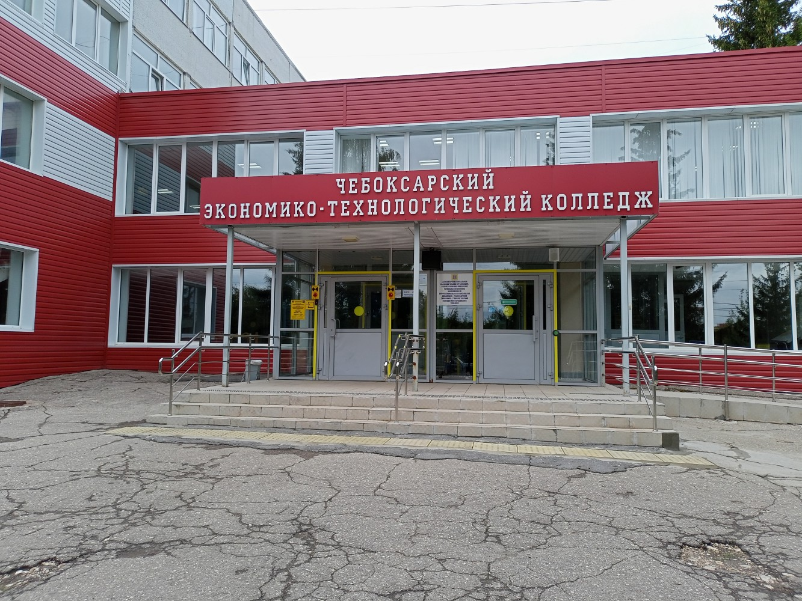

Мой колледж
Чебоксарский экономико-технологический колледж: колледж с большим колличество профилей и специальности лля обучения.

Моя специальность
Информационные системы и программирование (09.02.07): занимается созданием, тестированием и сопровождением программного обеспечения, а также проектированием и администрированием баз данных.
Чему я учусь
- Веб-разработка
- Базы данных
- Программирование
- Тестирование ПО